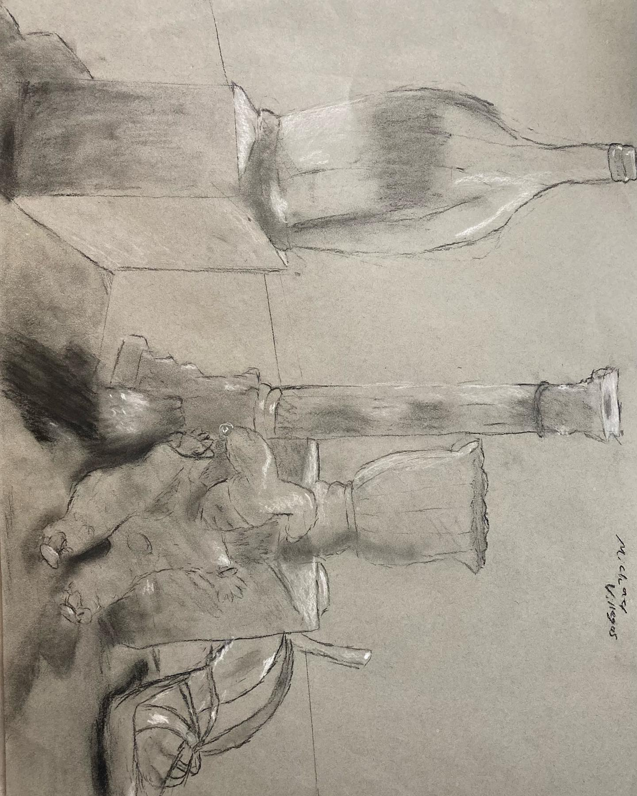

Home page
Early Art
Art Class Pics
Inspirations
Art Class Pics
Drawings that I made taking a beginning art class at USF
Charcoal Art

This assignment we were given a still life to draw with charcoal
Another assignment where we were given a still life to draw with charcoal
Major Projects
This assignment we were given a still life to paint in a timed setting
Here we were given a week to make a 2-point perspective of a hallway
This was our final project where we had to do a much more detailed 2-point perspective of a different hallway
A painting made at Pinots Pallet